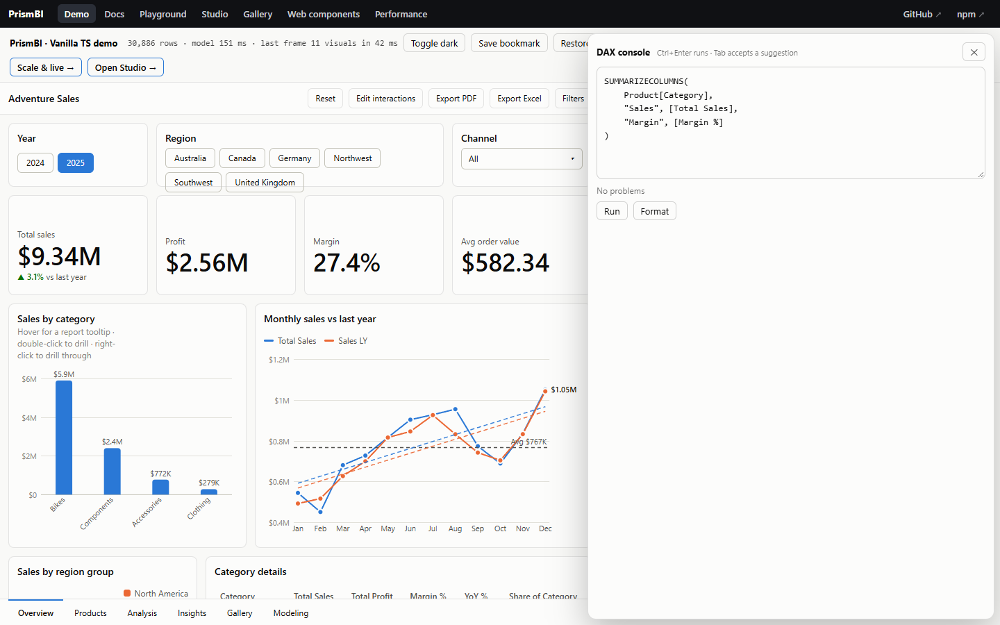

DAX tooling
These are building blocks for editors, consoles and documentation. They're tree-shaken out of apps that don't import them.

Language service #
import { DaxLanguageService } from '@prismbi/prismbi';
const ls = new DaxLanguageService(model);
ls.complete('SUM(Sales[Am', 12); // [{ label: 'Amount', kind: 'column', insertText: 'Amount]', from: 10, to: 12, … }]
ls.complete('[Tot', 4); // measures
ls.complete('CALCU', 5); // functions (CALCULATE first), tables, keywords, VAR names
ls.hover('[Total Sales]', 3); // { title: '[Total Sales]', detail: 'Measure · $#,0', documentation: 'SUM(Sales[Amount])' }
ls.signatureHelp('DIVIDE(1, ', 10); // { name: 'DIVIDE', signature: 'DIVIDE(<numerator>, <denominator>, [<alternate>])', activeParameter: 1 }
ls.diagnose('SUM(Sales[Nope])'); // [{ from: 9, to: 15, severity: 'error', message: "Column [Nope] not found in table 'Sales'" }]
ls.format('calculate(sum(Sales[Amount]),Products[Color]="Red")');All positions are character offsets, so you can map them to CodeMirror, Monaco or a plain <textarea>. The demo's DAX console (examples/console.ts) is a complete textarea-based example in about 150 lines.
Diagnostics cover:
- syntax errors, with their position
- unknown functions, tables, columns, measures and variables
Formatter #
import { formatDax } from '@prismbi/prismbi';
formatDax('VAR a=1 VAR b=2 RETURN a+b');
// VAR a = 1
// VAR b = 2
// RETURN
// a + b
formatDax(longExpression, { indent: ' ', maxLine: 100 });The formatter adds parentheses only where precedence needs them, keeps spacing consistent, and breaks calls that run past maxLine onto one argument per line.
Dependency explanation #
import { explainDax } from '@prismbi/prismbi';
explainDax(model, '[Margin %]');
// { formatted, functions: ['DIVIDE', 'SUM'], measures: ['Total Sales', 'Total Cost', 'Profit', 'Margin %'],
// columns: ['Sales[Amount]', 'Sales[Cost]'], tables: ['Sales'] }Use it for lineage views, impact analysis ("what breaks if I rename this column?") or documentation.
Function catalog #
DAX_FUNCTIONS lists every supported function with its signature, description and category, and DAX_KEYWORDS lists the bare keywords (intervals, sort orders, directions, types). A test checks that every catalogued function is implemented.
Lineage, impact and safe renames #
import { lineage, impactOf, renameModelField } from '@prismbi/prismbi';
const graph = lineage(model, report.toJSON()); // nodes (tables, columns, measures, visuals) and "uses" edges
const impact = impactOf(model, { kind: 'column', table: 'Sales', name: 'Amount' }, report.toJSON());
// { measures: ['Total Sales', 'Margin %', …], columns: ['Sales[Profit]'], visuals: [{ pageName, visualId, title }, …] }
const { report: updated } = renameModelField(model, { kind: 'measure', name: 'Total Sales' }, 'Revenue', report.toJSON());
report.load(updated!);-
Impact:
impactOffollows dependencies transitively, through measures and calculated columns, up to the visuals that would break. -
Renaming:
renameModelFieldrenames a measure or column and rewrites the references in other measures, calculated columns, and the report's visual fields and filters.-
Rewriting works on DAX tokens, so a string like
"[Total Sales]"is never touched. -
Table[Name]keeps meaning a column when that table has one. -
model.renameColumnrenames just the column; relationships follow.
-
Rewriting works on DAX tokens, so a string like
- In the Studio: renaming a measure or calculated column in its editor applies all of this automatically. Deleting a measure lists everything that uses it first.